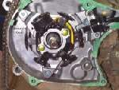

Someone has said the CDI (the ignition box on carburettor bikes) or the ECU (the engine computer on fuel-injected bikes) has failed. These units are costly and second-hand ones are often wrong for the bike. MAVCC notes that electronic ignition units do fail, but also that dirty connections are a common fault. The K-Light 125 manual tests the battery, wiring, plug, coil and pick-up before the ECU (PDF page 86). Use this page to prove the cheaper parts good before you buy a module.
Is it safe to ride?
With care if it runs. If it cuts out without warning, do not ride in traffic.
Quick checks first
- Battery charged? K-Light 125: the ECU works from 9 to 16 V.
- Fuses good? Main earth tight?
- Engine stop switch on RUN, side stand up, neutral selected.
- Fuel-injected: does the warning light come on for a moment at key ON? If it never lights, the ECU may have no power or earth.
- Any recent wash, rain, crash or wiring work?
- Before blaming the box, test the trigger coil, source coil and ignition coil against the resistances in your bike's manual, and recheck every plug-in connector and earth.
- Swapping in a unit from a working bike is a fair test, but a failed part can damage the good one. Do it only when the units are the same part number.
Diagnose it step by step
1Is the battery charged and are all fuses and the main earth good?
- No: Test and charge a 12 V battery, Clean and tighten earth connections.
- Yes: go to step 2.
2Do the stop switch, key switch and safety switches all test good?
- No: Test the engine stop switch, Test the side stand, clutch and neutral switches.
- Yes: go to step 3.
3With the key OFF, unplug the CDI or ECU. Are the pins clean, dry and tight?
- No: Clean and seal electrical connectors.
- Yes: go to step 4.
4Do the coil and cap test good, or does a known good coil not help?
- Coil faulty: Test the ignition coil and plug cap.
- Coil good: go to step 5.
5Does the pick-up test good? (K-Light 125: 150 ± 10 Ω at 20 °C)
- No: Test the ignition pick-up.
- Yes: go to step 6.
6Fuel-injected: can a diagnostic tool talk to the ECU, and what codes are stored? (K-Light 125: battery must be at least 8.5 V for the tool)
- No communication: check fuses, earth and the ECU plug; the K-Light 125 manual then suggests testing with another ECU (PDF page 275).
- Codes: follow them. Read engine fault codes (fuel injection).
- Carburettor bike: go to step 7.
7. Everything else tests good. Hand it to a workshop to check power and earth at the unit pins and to try a unit with the same part number. Diagnose a suspected CDI or ECU fault. Ask whether your bike has an immobiliser: a replacement ECU may need programming by the dealer.
Causes, most likely first
| Cause | How to confirm | Fix |
|---|---|---|
| Low battery or poor earth | Voltage and earth checks | Test and charge a 12 V battery |
| Dirty or wet connector at the unit | Corrosion; works when cleaned | Clean and seal electrical connectors |
| Faulty switch in the ignition circuit | Continuity tests | Test the engine stop switch |
| Faulty coil | Swap test | Test the ignition coil and plug cap |
| Faulty pick-up | Resistance; crank sensor code | Test the ignition pick-up |
| CDI or ECU failure | All else good; known good unit works | Diagnose a suspected CDI or ECU fault |
| Pick-up air gap too wide | Gap to the flywheel magnet checked with a brass or plastic gauge; use the value in your bike's manual | Test an ignition pick-up |
Reference values (K-Light 125)
| Item | Value | PDF page |
|---|---|---|
| ECU working supply | 9 to 16 V DC | 255 |
| Battery voltage for diagnostic tool | at least 8.5 V | 274 |
| Pick-up resistance | 150 ± 10 Ω at 20 °C | 87 |